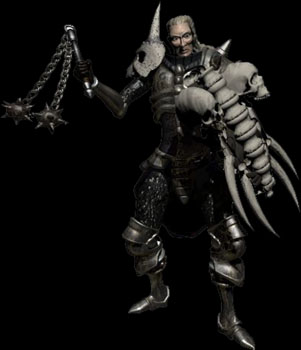

OK, so maybe this is just a _little_ sarcastic, but in the next version of N, if you still need to have caps on for debug mode, have it say CAPS LOCK MUST BE ON FOR CUSTOM LEVELS TO WORK or something to that effect the first time someone starts debug mode on a computer, and it doesn't go away until they actually do as they are told. I dunno if that would be doable, or even advisable, but it should at least cut down on the number of pointless posts in the forums.
I don't really want to insult the intelligence of any users, so we probably won't do that.
I certainly understand where you're coming from, though.
Fotunately for everyone, the next version of N/Ned will take care of this problem.
I certainly understand where you're coming from, though.
Fotunately for everyone, the next version of N/Ned will take care of this problem.
Put the sign on the debug mode screen
Um, can you say Necromancer?
that's me.
I was going to put up an image of a Necromancer from BfW followed by "@ 654321", but I can't find any online sites with that image that I can link to.
You can put it as an attachment if it's < 500k
Zing!

Never seen a necromancer with a double-headed flail before.
that looks a lot like my diablo necromancer
It is a diablo necro, probably with a Lidless and a H.O.T.O, from the looks of things...
/Nerd
/Nerd
Could it be made so the levels run when caps lock is off?
Me~

Hey 654321... in your sig, with the list of rules, you don't need the "this rule also applies in the Bash & Trash forum," since it doesn't. Bash & Trash, coincidentally, has its own rule that says the exact same damn thing. For technical purposes, BnT doesn't use that rule from the main boards, it follows its own rules, one of which is the very same rule as in the rest of the forums.
Just wanted to make that clear, that BnT rules are a separate entity.
Just wanted to make that clear, that BnT rules are a separate entity.